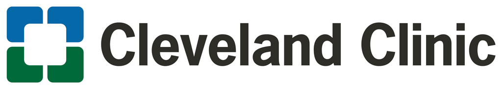
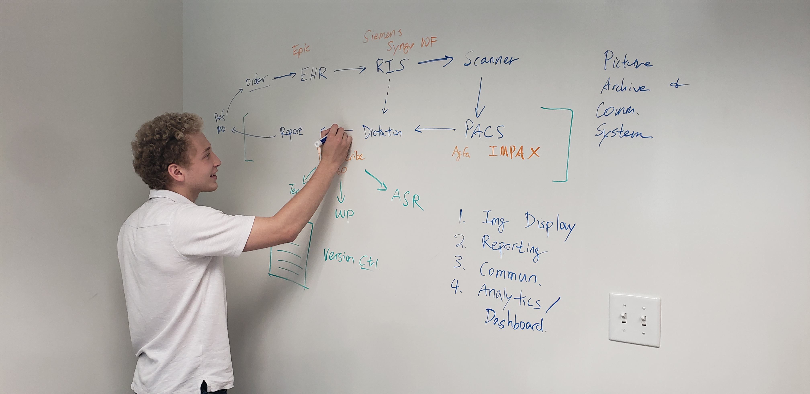

Introduction
In the spring of 2019, I was fortunate enough to participate in an internship with the imaging informatics team at Cleveland Clinic. One other student and I were tasked with collecting data on the usage of imaging software from the patient and physician perspective and using this data to maximize the efficiency of the software suite. Due to the strict privacy restrictions in the healthcare space, I am unable to divulge the specific data we collected, but one of the more public-facing projects we worked on is displayed below.

Project Overview
One of the conclusions we drew when observing radiologists and technologists was the profound negative impact of limited patient information on the workflow in the imaging area. Because patients often provide very little information when coming in to have imaging done, tests and diagnoses are often delayed or require further clarification. When questioning patients waiting to have images taken, we learned that most patients would prefer to provide information on their condition before their visit from the comfort of their home, rather than on a clipboard in the waiting room. With this in mind, we began work on a new online appointment request form, which gathers patient information earlier in the process.
The Goal: Improve the efficiency of radiological diagnostic testing by allowing patients to provide information at the same time that they schedule an appointment
My Role: Conducting Interviews, User Testing, Interaction Design, Visual Design
Research Methodology
Our design improvements were based on the qualitative and quantitative information we gathered from interviewing patients, radiologists, and technologists, as well as observing their uninterrupted workflow. Once again, due to the private nature of the healthcare space, I am unable to provide specific data.
Improving the Existing System
The Current Process
- Patient makes an appointment online with basic patient info (name, DOB, etc)
- While in the waiting room for their appointment, the patient fills out the information on the clipboard, often very limited information is provided
- Because of limited patient information, technologist provides radiologists with an overgeneralized and meaningless description, like "pain"
- When reading the case, the radiologist may have to request more info to diagnose the patient, as there is not enough info given
The Improved Process
- Patient makes an appointment online, given the ability to provide detailed info including text, image, video, or audio submissions
- With detailed info provided beforehand, the technologist writes an accurate description of the patient condition
- Radiologist can to make a diagnosis quickly with a detailed technologist description
Low Fidelity Prototype Testing
We used our low fidelity prototypes to complete user testing with patients who used the existing system to schedule their appointments. We found that the layout of the request form was regarded as more usable and more efficient than the existing appointment request process. With a few minor adjustments, we were able to incorporate this low fidelity mockup into our final interactive prototype.